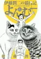
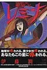

伊藤潤二（いとう じゅんじ）
TBD
伊藤潤二の猫日記 よん＆むー

01TBD
伊藤潤二恐怖博物館
伊藤潤二自選傑作集
人間失格
地獄星レミナ

01TBD
データベース
| タイトル | ISBN | 絵 | 作 | 発行 | URL | 紙 | 電子 | その他1 | その他2 |
|---|---|---|---|---|---|---|---|---|---|
| 伊藤潤二の猫日記 よん＆むー | 9784063376647 | 伊藤 潤二 | 講談社 | url | Y | 2711 | |||
| 伊藤潤二恐怖博物館（1） | 9784257721598 | 伊藤潤二 | 朝日ソノラマ | url | Y | 232 | |||
| 伊藤潤二自選傑作集 | 9784022141835 | 伊藤潤二 | 朝日新聞出版 | url | Y | 2389 | |||
| 人間失格 1 | 9784091897183 | 伊藤 潤二/太宰 治 | 小学館 | url | Y | 4140 | |||
| 地獄星レミナ | 9784091860835 | 伊藤潤二 | 小学館 | url | Y | 413 |